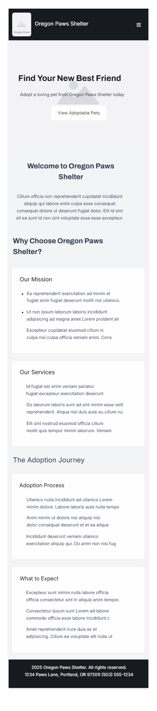
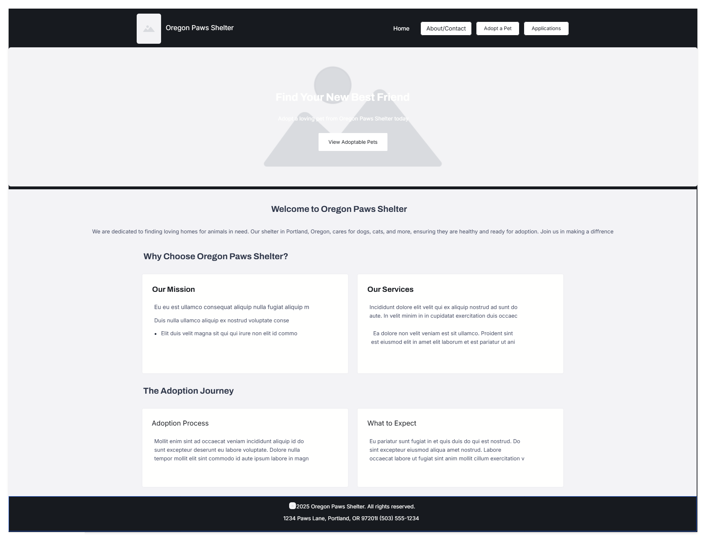

Site Name
Oregon Paws Shelter
This name reflects a pet adoption shelter based in Portland, Oregon, focused on finding loving homes for animals. The word "Paws" emphasizes the focus on pets, while "Oregon" ties it to the local community, enhancing regional recognition and trust.
Optional domain availability: oregonpawsshelter.org
Site Purpose
The Oregon Paws Shelter website serves as a platform to facilitate pet adoptions in Portland, Oregon. It provides:
- A gallery of adoptable pets with detailed profiles.
- Information about the shelter's mission, services, and adoption process.
- A contact section with location details and a form for adoption inquiries.
Scenarios
These are questions a typical visitor might ask:
- How can I adopt a pet, and what is the adoption process like?
- What are the shelter's operating hours, and how can I contact them?
Color Schema
The following colors are selected for the website:
- Primary Blue (#2563eb): Used for headers, navigation, buttons, and footer background to create a professional and trustworthy feel.
- Primary Yellow (#facc15): Used for call-to-action buttons, hover effects, and accents to draw attention and add warmth.
- Background Gray (#f3f4f6): Used for the main background to provide a neutral, clean look.
- Text Color (#1f2937): Used for body text to ensure readability with high contrast.
These colors are applied in this site plan document (e.g., blue header, yellow accents, gray background).
Typography
The website will use the following font:
- Roboto, sans-serif: Used for all text (headings, body, navigation, etc.) due to its clean, modern look and wide availability, ensuring consistency and readability across devices.
This font is applied throughout this site plan document.
Wireframe
Mobile View (Small Screens)
[Header: Logo (left), Hamburger Menu (right)]
[Hero Section: Full-width image with overlaid text and CTA button]
[Welcome Section: Centered heading and paragraph]
[Why Choose Us Section: Stacked cards (Mission, Services)]
[Adoption Journey Section: Stacked cards (Process, Expectations)]
[Footer: Centered text with contact info]
Desktop View (Wide Screens)
[Header: Logo (left), Navigation Links (center)]
[Hero Section: Full-width image with overlaid text and CTA button]
[Welcome Section: Centered heading and paragraph]
[Why Choose Us Section: Two cards side by side (Mission, Services)]
[Adoption Journey Section: Two cards side by side (Process, Expectations)]
[Footer: Centered text with contact info]
